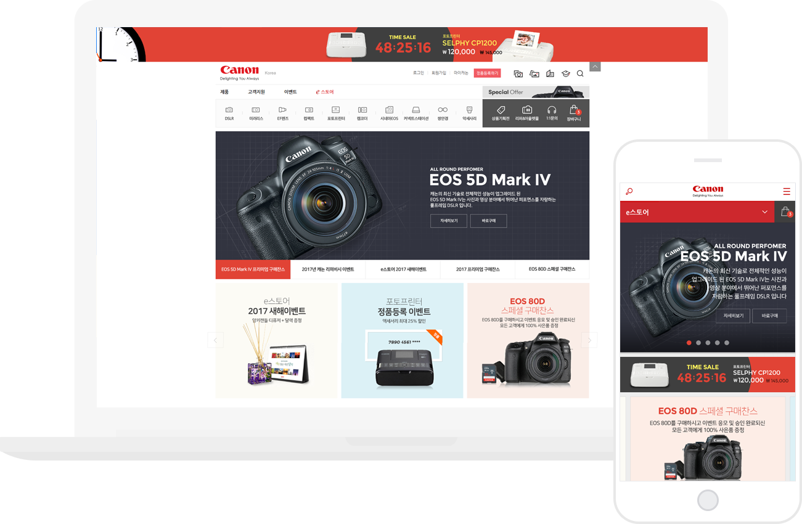

참여도
100%
작업내용
CANON eSTORE 제안 발표용 퍼블리싱 작업을 하였으며, 제안용 작업이다보니 하드코딩 보다는 인터렉션 효과에 더 중점을 두어 작업하였다.
PC 상단 화살표버튼 클릭시 팝업이 노출되도록 스크립트 작업하였고, 스크롤 시 자동으로 닫히도록 설정하였다.
그리고 스크롤하여 화면을 내리면, 상단이 숨겨지는 부분과 고정되는 부분이 나누어 지도록 스크립트 작업을 하였다.
PC 서브페이지에서는 오른쪽 하단에 SCOROLL TOP값을 인지하여 영역을 자동으로 표시되도록 고정하였다.
MOBILE 메인 작업에서는 기본적으로 silck.js를 사용하여 이미지 노출값을 조절한 상태로 슬라이드 되도록 하였다.
인터렉션이 보다 자연스럽게 연출 되도록 스크립트 작업에 집중했던 작업이었다.